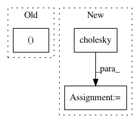

1d3e25c3ad4835ee298675f557e4c78bc8501c74,GPflow/ekernels.py,RBF,eKxz,#RBF#Any#Any#Any#,24
Before Change
q = tf.reduce_sum(smIvec * vec, [1]) // NxM
det = tf.matrix_determinant(
tf.expand_dims(eye(D), 0) + tf.reshape(lengthscales ** -2.0, (1, 1, -1)) * Xcov
) // N
return self.variance * tf.expand_dims(det ** -0.5, 1) * tf.exp(-0.5 * q)
After Change
lengthscales = self.lengthscales if self.ARD else tf.zeros((D,), dtype=float_type) + self.lengthscales
vec = tf.expand_dims(Xmu, 2) - tf.expand_dims(tf.transpose(Z), 0) // NxDxM
chols = tf.cholesky(tf.expand_dims(tf.diag(lengthscales ** 2), 0) + Xcov)
Lvec = tf.matrix_triangular_solve(chols, vec)
q = tf.reduce_sum(Lvec ** 2, [1])
chol_diags = tf.matrix_diag_part(chols) // N x D
half_log_dets = tf.reduce_sum(tf.log(chol_diags), 1) - tf.reduce_sum(tf.log(lengthscales)) // N,
return self.variance * tf.exp(-0.5 * q - tf.expand_dims(half_log_dets, 1))
In pattern: SUPERPATTERN
Frequency: 3
Non-data size: 3
Instances
Project Name: GPflow/GPflow
Commit Name: 1d3e25c3ad4835ee298675f557e4c78bc8501c74
Time: 2017-03-06
Author: james.hensman@gmail.com
File Name: GPflow/ekernels.py
Class Name: RBF
Method Name: eKxz
Project Name: GPflow/GPflow
Commit Name: 956ac38fd58a1ef65c18dffc06a22d2e628e3a16
Time: 2016-01-18
Author: james.hensman@gmail.com
File Name: testing/test_conditionals.py
Class Name: WhitenTestGaussian
Method Name: test_whiten
Project Name: pymc-devs/pymc3
Commit Name: d15d9ad19021a8a3f26a86fbc6b71838ac37e7d1
Time: 2017-03-30
Author: jonathan.h.friedman@gmail.com
File Name: pymc3/distributions/multivariate.py
Class Name: MvNormal
Method Name: __init__